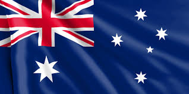

| EUROPA | ASIA | ÁFRICA | OCEANIA | CRISTÓBAL COLON |
|---|---|---|---|---|
| alemania | china | senegal | australia | méxico |
| francia | japon | marruecos | fiyi | argentina |
| inglaterra | india | nigeria | nueva zelanda | brasil |
| españa | china | kenia | samoa | estados unidos |
| holanda | indonecia | sudafrica | palaos | canada |
Inglaterra, la cuna de Shakespeare y The Beatles, es un país de las Islas Británicas que limita con Escocia y Gales.
Ies un país de Europa occidental con un paisaje de bosques, ríos, cadenas montañosas y playas en el mar del Norte.
España, país de la península ibérica de Europa, incluye 17 regiones autónomas con diversas características geográficas y culturales.

Los Países Bajos son un país del noroeste europeo conocido por su paisaje plano de canales, campos de tulipanes, molinos y ciclovías.
Francia, en Europa Occidental, abarca ciudades medievales, villas alpinas y playas mediterráneas1.

Sudáfrica es un país del extremo más meridional del continente africano que se caracteriza por sus numerosos ecosistemas distintos.
Kenia es un país de África Oriental con una costa en el océano Índico.
Su costa sur está localizada en el Golfo de Guinea en el Océano Atlántico
La Alcazaba de los Udayas en la capital, Rabat, es un fuerte real del siglo XII con vista al mar

Senegal es un país de la costa oeste de África con un rico legado colonial francés y muchas atracciones naturales

Fiyi, un país del Pacífico Sur, es un archipiélago de más de 300 islas
Australia es un país rodeado por los océanos Índico y Pacífico
Nueva Zelanda es un país en el suroeste del océano Pacífico, que comprende dos islas principales, ambas marcadas por los volcanes y la glaciación
Samoa es un país que abarca el grupo más occidental del archipiélago de Samoa, en la Polinesia.

Palaos es un archipiélago de más de 500 islas, forma parte de la región de Micronesia en el océano Pacífico occidental.
México es un país entre los Estados Unidos y América Central, conocido por las playas en el Pacífico y el golfo de México, y su diverso paisaje de montañas, desiertos y selvas
Canadá es el país norteamericano que se extiende desde los Estados Unidos en el sur hasta el círculo polar ártico en el norte
Estados Unidos es un país de 50 estados que ocupa una extensa franja de América del Norte, con Alaska en el noroeste y Hawái que extiende la presencia del país en el océano Pacífico.
Brasil es un vasto país de Sudamérica que se extiende desde la Cuenca del Amazonas en el norte hasta los viñedos y las enormes cataratas del Iguazú en el sur

Argentina es un país sudamericano de gran envergadura con un terreno que incluye las montañas de los Andes, lagos glaciales y praderas en las Pampas, la tierra tradicional de pastoreo de su famoso ganado.

japón es una nación insular del océano Pacífico con densas ciudades, palacios imperiales, parques nacionales montañosos y miles de santuarios y templos

China es una nación muy poblada de Asia Oriental cuyos vastos paisajes abarcan praderas, desiertos, montañas, lagos, ríos y más de 14,000 km de costa.

China es una nación muy poblada de Asia Oriental cuyos vastos paisajes abarcan praderas, desiertos, montañas, lagos, ríos y más de 14,000 km de costa.
Indonesia, un país del Sudeste Asiático compuesto de miles de islas volcánicas, es hogar de cientos de grupos étnicos que hablan varios idiomas distintos.

La República de Corea, comúnmente Corea del Sur es un Estado soberano de Asia Oriental, ubicado en la parte sur de la península de Corea